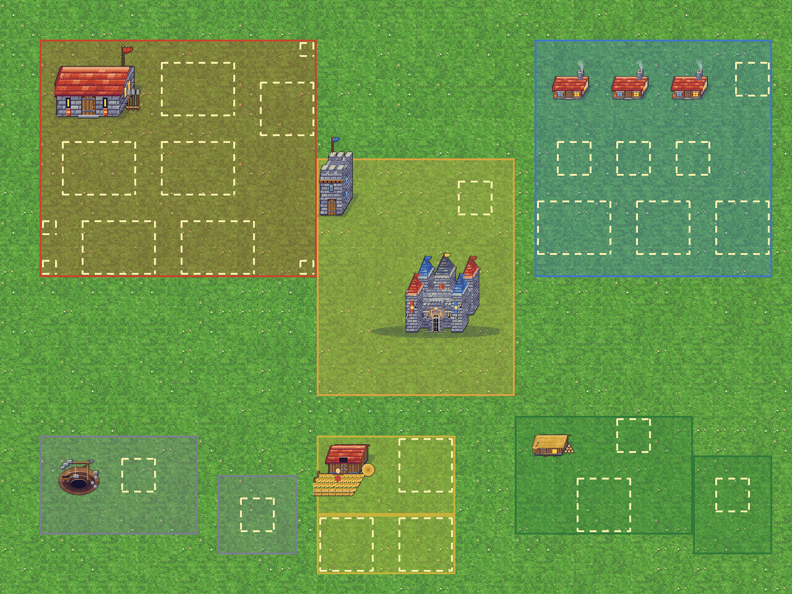

👑
Krallık
Kale Sv. 1
12.5K
8.5K
6.8K
2.5K
⚔️
Hedef: Kalenizi Seviye 2'ye yükseltin!
Git
🌐
Tümü
●
Kale
●
Askeri
●
Sivil
●
Maden
●
Orman
●
Tarla

İnşa etmek için yanıp sönen bir yeşil slota dokunun
İptal
📍 Krallık Bölgesi (X: 680, Y: 520)
Geniş kıtayı keşfetmek için sürükleyin • Düşman kamplarına ve kaynaklara dokunun
Harita Değiştiriliyor...
İnşa
Birlikler
Akademi
Görevler
Envanter
Bina Menüsü
✕